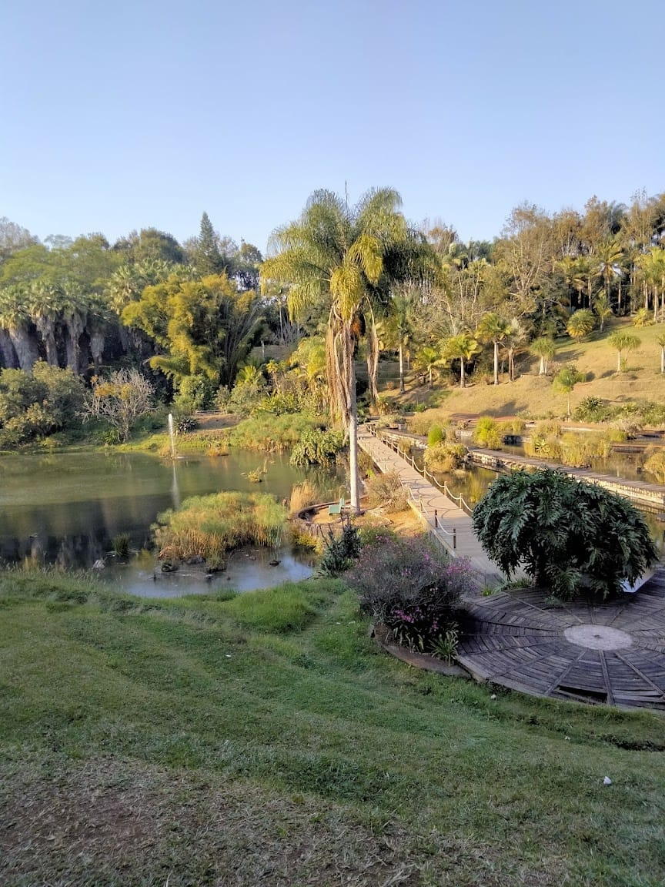
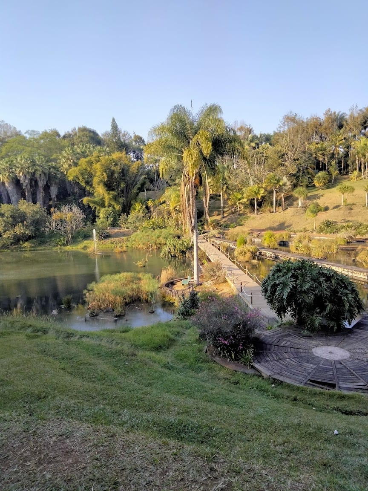

Por un Xalapa más verde!
Tú puedes hacer la diferencia, una conciencia a la vez.
Tú puedes hacer la diferencia, una conciencia a la vez.


Bienvenidos a los hermosos Lagos de Xalapa, un rincón lleno de historia, naturaleza y tranquilidad en el corazón de la capital veracruzana. Este encantador espacio, también conocido como Lagos del Dique, es un destino ideal para quienes buscan relajarse en un ambiente natural mientras disfrutan de un recorrido entre árboles, senderos y cuerpos de agua que han formado parte de la historia de la ciudad.
A medida que avanzamos por el sendero, nos encontramos con una rica variedad de flora que adorna el paisaje. Entre los árboles más representativos destacan el sauce llorón (Salix babylonica), con sus elegantes ramas colgantes, y el liquidámbar (Liquidambar styraciflua), que en otoño tiñe el paisaje de tonos rojizos y dorados. También es posible admirar especies como el fresno (Fraxinus uhdei), los encinos (Quercus sp.) y el guayabo, que aportan frescura y sombra a los visitantes.
A la orilla del agua, crecen diversas plantas acuáticas como el lirio acuático (Eichhornia crassipes) y el tule (Typha sp.), que ayudan a purificar el agua y brindan refugio a varias especies. No podemos olvidar la belleza de las bugambilias, las hortensias y otras plantas ornamentales que llenan el paisaje de color y vida.
Mientras seguimos nuestro recorrido, es común encontrarnos con diversas especies de aves que habitan en los lagos. Podemos observar garzas descansando sobre el agua, patos nadando en grupos, así como gorriones, zanates y palomas revoloteando entre los árboles. Algunas de estas aves son residentes, mientras que otras nos visitan en ciertas temporadas del año.
En las tranquilas aguas de los lagos, es posible divisar peces como carpas y tilapias, que se han adaptado a este entorno con el tiempo. Si prestamos atención, podemos notar la presencia de ranas y sapos, que con su característico croar nos recuerdan la riqueza natural del lugar. También habitan tortugas de agua dulce, asoleándose en las piedras y troncos flotantes.
Entre los árboles, es común ver ardillas juguetonas saltando de rama en rama, mientras que los tlacuaches aparecen al atardecer en busca de alimento. Al caer la noche, los discretos murciélagos emergen para cumplir su importante labor en el ecosistema.
Los Lagos de Xalapa son mucho más que un sitio de recreación; son un espacio donde la historia, la naturaleza y la comunidad convergen. Ya sea para una caminata relajante, una sesión de fotografía o simplemente para disfrutar de la tranquilidad del entorno, este parque es una joya dentro de la ciudad.
La próxima vez que busques un escape natural sin salir de Xalapa, no dudes en visitar este hermoso lugar. ¡Disfruta del aire puro, de la flora y fauna, y déjate sorprender por la belleza de los Lagos de Xalapa!


 

Bienvenidos a la Unidad de Servicios Bibliotecarios y de Información (USBI) Xalapa, un espacio emblemático de la Universidad Veracruzana (UV) y uno de los centros bibliotecarios más importantes de la región. Si eres amante del conocimiento, este lugar es una parada obligada dentro de la vida académica de la ciudad. Al recorrer sus instalaciones, nos encontramos con una colección vasta de libros y revistas especializadas, tanto en formato físico como digital. La USBI ofrece acceso a bases de datos académicas, herramientas de investigación y un catálogo que cubre todas las áreas del conocimiento. Para facilitar el estudio y el trabajo en equipo, la biblioteca cuenta con salas de cómputo, espacios de estudio grupal e individual, y áreas diseñadas para la consulta de material audiovisual. Además, su sala de exposiciones culturales permite disfrutar de muestras artísticas y eventos relacionados con la academia y la cultura. Si te interesa aprender o practicar un nuevo idioma, la USBI también alberga el Centro de Autoacceso de Idiomas, un espacio equipado con recursos multimedia que permiten mejorar las habilidades lingüísticas en diferentes lenguas. Desde programas interactivos hasta material audiovisual, este centro es una excelente herramienta para estudiantes que buscan fortalecer su conocimiento de idiomas. Más allá de ser una biblioteca, la USBI Xalapa es un punto de encuentro para el aprendizaje, la innovación y la cultura. Su ambiente tranquilo y su infraestructura moderna la convierten en el lugar ideal para el desarrollo académico de la comunidad universitaria y un ejemplo del compromiso de la Universidad Veracruzana con la difusión del conocimiento. Ya sea que busques un rincón para la investigación, un espacio para el estudio colaborativo o simplemente quieras explorar sus instalaciones, la USBI Xalapa siempre tiene algo que ofrecer. ¡No dudes en visitarla y sumergirte en un mundo de aprendizaje sin límites!
Checa algunas áreas verdes que te pueden interesar